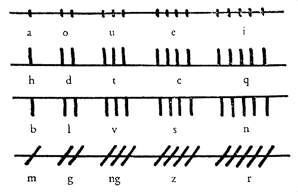
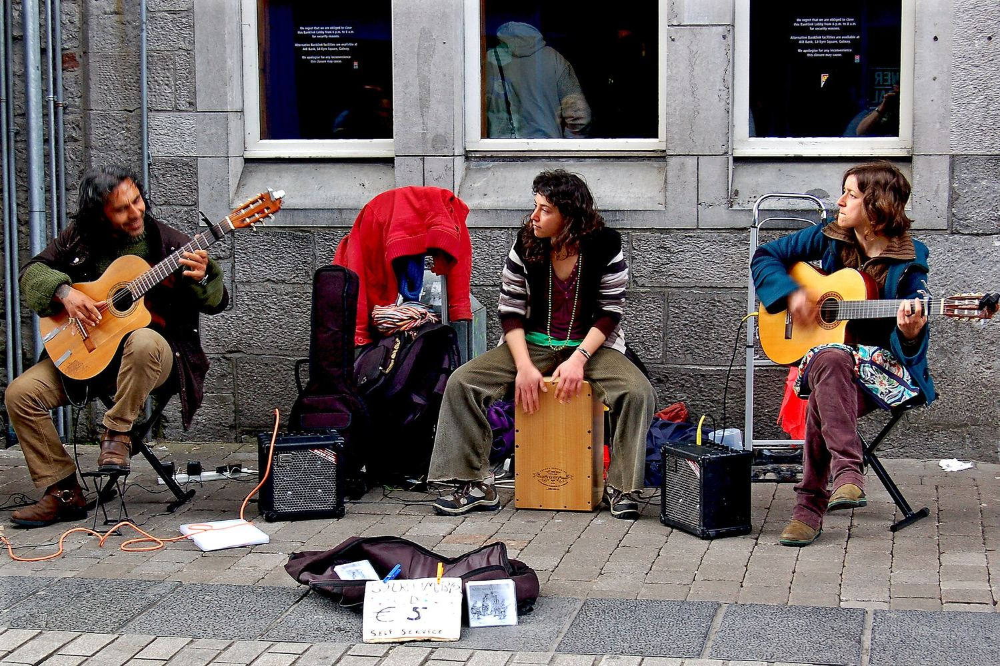
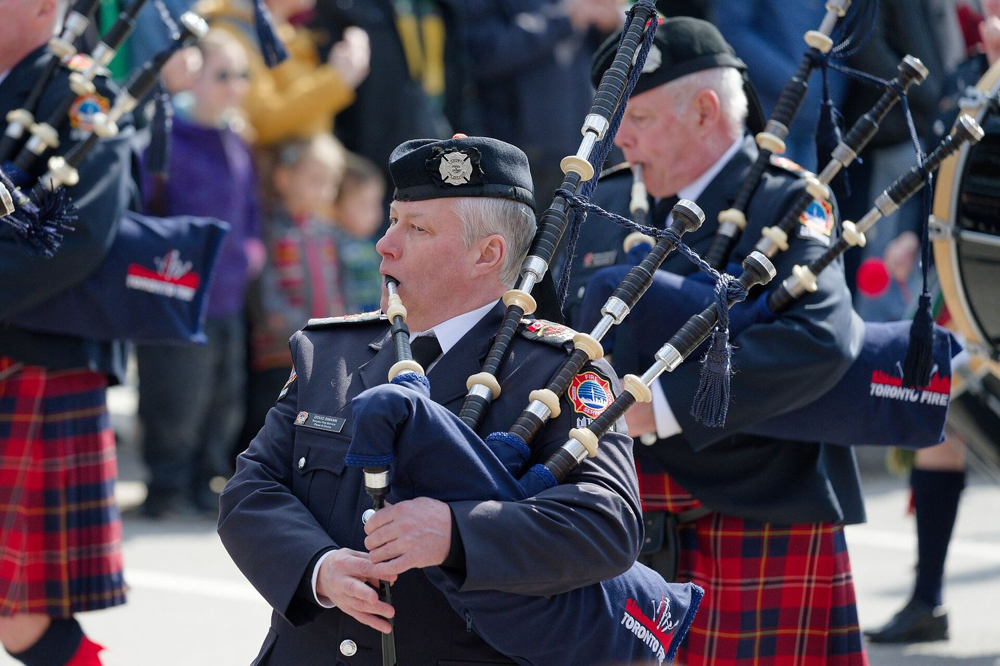
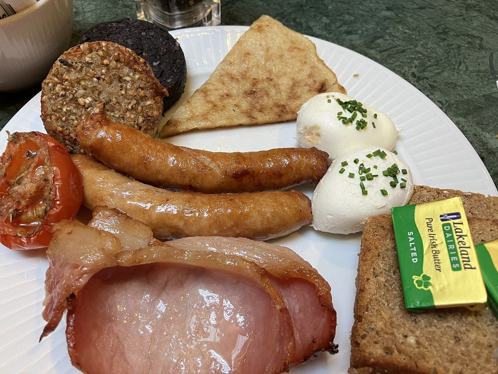
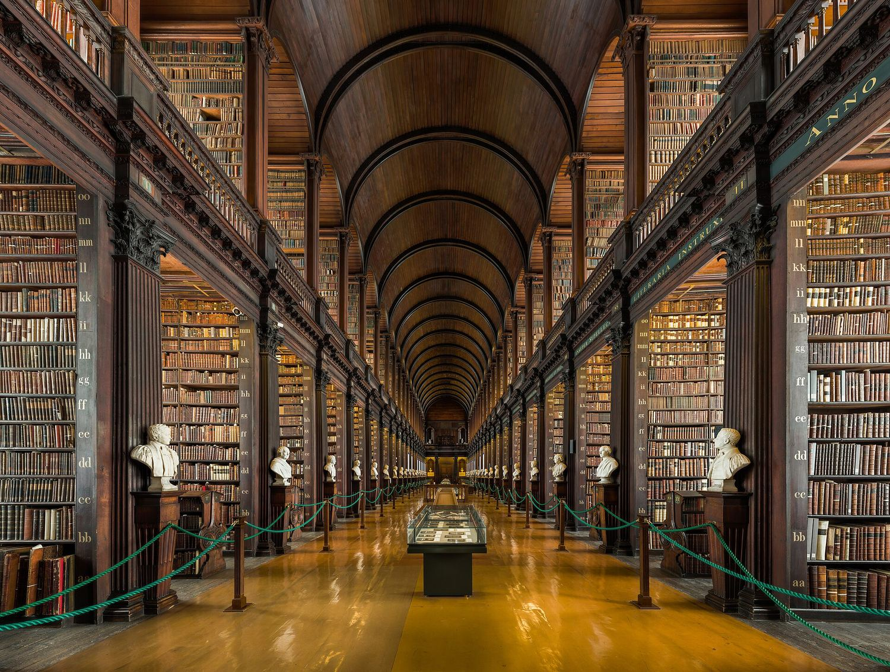

Ways of living
Culture and daily life
Language, music, festivals, food and sport are how Ireland explains itself to itself. Most of them are older than the state, and most of them are still live — you can hear, eat, drink, sing, watch or speak all five of them on any given week.

It is not a dead language. It is a language with a very long memory.
on Irish
The Irish language
Irish is a Celtic language, and the oldest vernacular written language in western Europe. Its earliest records are ogham stones — vertical strokes cut along the edge of a standing stone — from around the fourth century, and they are still found across the south-west.
English displaced it over four hundred years of law, schooling and famine, until by 1900 Irish was a minority language even in most of the west. The revival that began then did not restore it as a first language, but it did keep it alive: it is now an official language of Ireland and of the European Union, and it is taught in every school in the country.
Today roughly 70,000 people speak it daily, mostly in the Gaeltacht areas of Donegal, Mayo, Galway, Kerry and Cork. It has also left its mark on how everyone in Ireland speaks English: the vocabulary, the sentence order and the habit of telling a story sideways all come from Irish.
Music and dance
Irish traditional music is played in a session, not a performance: musicians sit in a circle in a pub, start a tune, and others join when they know it. There is no conductor, no set list and no applause until the set ends. Sessions run almost every night in Galway, Dingle, Ennis, Westport and Dublin.
The instruments are a mix of the very old and the surprisingly new. The uilleann pipes, the fiddle and the flute are centuries old; the bodhrán frame drum, the button accordion and the banjo were adopted in the nineteenth and twentieth centuries and now sound completely Irish.
Dance went the other way. Step dancing was transformed in the 1990s by Riverdance from a competitive form judged at feiseanna into a global spectacle, and there are now more people dancing Irish step dance outside Ireland than inside it.

Festivals
St Patrick's Day on 17 March is the obvious one, and it is now celebrated more enthusiastically outside Ireland than in it — from Boston to Buenos Aires, the parades run to millions of people. At home it is a bank holiday, a long weekend of parades, and, until the 1970s, a day when the pubs were closed.
Halloween is the other, and it is Irish in origin. Samhain marked the end of the harvest and the beginning of winter, when the boundary between the living and the dead was thought to be thin. Turnip lanterns, disguises and offerings of food came from Ireland and Scotland to America, where the turnip became a pumpkin.
The year is full of others: the Galway Arts Festival in July, the Puck Fair in Killorglin in August — where a goat is crowned king for three days — the Fleadh Cheoil, the All-Ireland finals in September, and Christmas, which in Ireland starts on 8 December and ends on 6 January.

Food and drink
The full Irish breakfast is the country's most famous dish and its most forgiving: rashers, sausages, black and white pudding, eggs, tomato, mushrooms, soda bread and, in the north, potato bread. It began as a farmhouse meal for people who were about to work outside all day.
The rest of the traditional kitchen is built on what grew in poor soil and wet weather: potatoes, oats, cabbage, dairy and seaweed. Chowder, boxty, colcannon, coddle, soda bread and carrageen moss pudding are all still on menus, and oyster farms from Galway and Cork now supply some of the best restaurants in Europe.
Drink means two things. Guinness, brewed at St James's Gate in Dublin since 1759, is a dry Irish stout that is now sold in more than 120 countries. And whiskey, which the Irish spell with an 'e' — the word itself comes from uisce beatha, 'water of life', and Ireland has more working distilleries today than at any point in a hundred years.

Sport and writing
Ireland has two national sports, both native and both amateur. Hurling is the faster of the two — played with a stick called a hurl and a small ball, at a speed that looks impossible on a first viewing — and Gaelic football is the more popular. Both are run by the GAA, which was founded in 1884 as part of the same revival movement as the language and the music.
The All-Ireland finals in September fill Croke Park with 82,000 people, and the players are teachers, farmers and students who go back to work on Monday. The games are the clearest surviving example of a distinct Irish public culture.
Writing is the other national sport. Ireland has four winners of the Nobel Prize in Literature — Yeats, Shaw, Beckett and Heaney — from a country of fewer than five million people, and a tradition that runs from the Book of Kells to the Long Room at Trinity, where 200,000 volumes are shelved under a barrel-vaulted ceiling built in 1732.

Five doors into the culture, in no particular order.